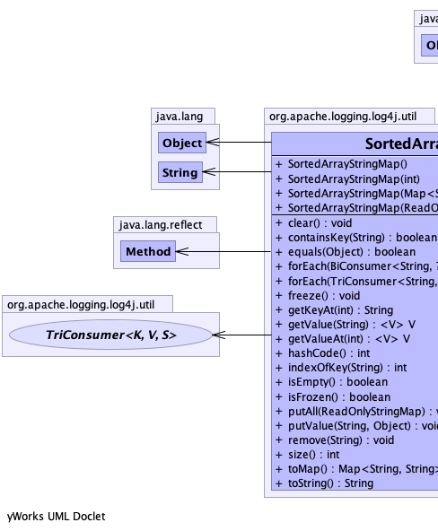
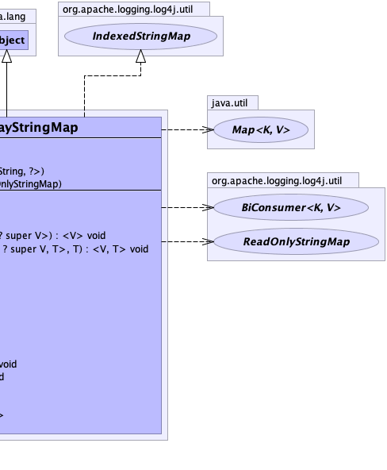

public class SortedArrayStringMap extends java.lang.Object implements IndexedStringMap
ReadOnlyStringMap interface. Keys are held in a sorted array.
This is not a generic collection, but makes some trade-offs to optimize for the Log4j context data use case:
BiConsumer and TriConsumer.SortedArrayStringMap, the full thread context
data can be transferred with two array copies and two field updates.get and containsKey is O(log N),
worst-case performance of put and remove is O(N log N).
The expectation is that for the small values of N (less than 100) that are the vast majority of
ThreadContext use cases, the constants dominate performance more than the asymptotic performance of the
algorithms used.
|  |  |
| Constructor and Description |
|---|
SortedArrayStringMap() |
SortedArrayStringMap(int initialCapacity) |
SortedArrayStringMap(java.util.Map<java.lang.String,?> map) |
SortedArrayStringMap(ReadOnlyStringMap other) |
| Modifier and Type | Method and Description |
|---|---|
void |
clear()
Removes all key-value pairs from this collection.
|
boolean |
containsKey(java.lang.String key)
Returns
true if this data structure contains the specified key, false otherwise. |
boolean |
equals(java.lang.Object obj)
Indicates whether some other object is "equal to" this one.
|
<V> void |
forEach(BiConsumer<java.lang.String,? super V> action)
Performs the given action for each key-value pair in this data structure
until all entries have been processed or the action throws an exception.
|
<V,T> void |
forEach(TriConsumer<java.lang.String,? super V,T> action,
T state)
Performs the given action for each key-value pair in this data structure
until all entries have been processed or the action throws an exception.
|
void |
freeze()
Makes this collection immutable.
|
java.lang.String |
getKeyAt(int index)
Viewing all key-value pairs as a sequence sorted by key, this method returns the key at the specified index,
or
null if the specified index is less than zero or greater or equal to the size of this collection. |
<V> V |
getValue(java.lang.String key)
Returns the value for the specified key, or
null if the specified key does not exist in this collection. |
<V> V |
getValueAt(int index)
Viewing all key-value pairs as a sequence sorted by key, this method returns the value at the specified index,
or
null if the specified index is less than zero or greater or equal to the size of this collection. |
int |
hashCode()
Returns a hash code value for the object.
|
int |
indexOfKey(java.lang.String key)
Viewing all key-value pairs as a sequence sorted by key, this method returns the index of the specified key in
that sequence.
|
boolean |
isEmpty()
Returns
true if this collection is empty (size is zero), false otherwise. |
boolean |
isFrozen()
|
void |
putAll(ReadOnlyStringMap source)
Copies all key-value pairs from the specified
ReadOnlyStringMap into this StringMap. |
void |
putValue(java.lang.String key,
java.lang.Object value)
Puts the specified key-value pair into the collection.
|
void |
remove(java.lang.String key)
Removes the key-value pair for the specified key from this data structure.
|
int |
size()
Returns the number of key-value pairs in this collection.
|
java.util.Map<java.lang.String,java.lang.String> |
toMap()
Returns a non-
null mutable Map<String, String> containing a snapshot of this data structure. |
java.lang.String |
toString() |
public SortedArrayStringMap()
public SortedArrayStringMap(int initialCapacity)
public SortedArrayStringMap(ReadOnlyStringMap other)
public SortedArrayStringMap(java.util.Map<java.lang.String,?> map)
public void clear()
StringMappublic boolean containsKey(java.lang.String key)
ReadOnlyStringMaptrue if this data structure contains the specified key, false otherwise.containsKey in interface ReadOnlyStringMapkey - the key whose presence to check. May be null.true if this data structure contains the specified key, false otherwise.public java.util.Map<java.lang.String,java.lang.String> toMap()
ReadOnlyStringMapnull mutable Map<String, String> containing a snapshot of this data structure.toMap in interface ReadOnlyStringMapMap<String, String> form.public void freeze()
StringMapfreeze() method was called
will result in an UnsupportedOperationException being thrown.public boolean isFrozen()
StringMappublic <V> V getValue(java.lang.String key)
ReadOnlyStringMapnull if the specified key does not exist in this collection.getValue in interface ReadOnlyStringMapkey - the key whose value to return.null.public boolean isEmpty()
ReadOnlyStringMaptrue if this collection is empty (size is zero), false otherwise.isEmpty in interface ReadOnlyStringMaptrue if this collection is empty (size is zero).public int indexOfKey(java.lang.String key)
IndexedReadOnlyStringMap(-(insertion point) - 1).indexOfKey in interface IndexedReadOnlyStringMapkey - the key whose index in the ordered sequence of keys to return(-(insertion point) - 1) if the key is not found.
The insertion point is defined as the point at which the key would be inserted into the array:
the index of the first element in the range greater than the key, or size() if all elements
are less than the specified key. Note that this guarantees that the return value will be >= 0
if and only if the key is found.public void putValue(java.lang.String key,
java.lang.Object value)
StringMappublic void putAll(ReadOnlyStringMap source)
StringMapReadOnlyStringMap into this StringMap.public void remove(java.lang.String key)
StringMappublic java.lang.String getKeyAt(int index)
IndexedReadOnlyStringMapnull if the specified index is less than zero or greater or equal to the size of this collection.getKeyAt in interface IndexedReadOnlyStringMapindex - the index of the key to returnnullpublic <V> V getValueAt(int index)
IndexedReadOnlyStringMapnull if the specified index is less than zero or greater or equal to the size of this collection.getValueAt in interface IndexedReadOnlyStringMapindex - the index of the value to returnnullpublic int size()
ReadOnlyStringMapsize in interface ReadOnlyStringMappublic <V> void forEach(BiConsumer<java.lang.String,? super V> action)
ReadOnlyStringMap
Some implementations may not support structural modifications (adding new elements or removing elements) while
iterating over the contents. In such implementations, attempts to add or remove elements from the
BiConsumer's BiConsumer.accept(Object, Object) accept} method may cause a
ConcurrentModificationException to be thrown.
forEach in interface ReadOnlyStringMapV - type of the value.action - The action to be performed for each key-value pair in this collection.public <V,T> void forEach(TriConsumer<java.lang.String,? super V,T> action, T state)
ReadOnlyStringMapThe third parameter lets callers pass in a stateful object to be modified with the key-value pairs, so the TriConsumer implementation itself can be stateless and potentially reusable.
Some implementations may not support structural modifications (adding new elements or removing elements) while
iterating over the contents. In such implementations, attempts to add or remove elements from the
TriConsumer's accept method may cause a
ConcurrentModificationException to be thrown.
forEach in interface ReadOnlyStringMapV - type of the value.T - type of the third parameter.action - The action to be performed for each key-value pair in this collection.state - the object to be passed as the third parameter to each invocation on the specified
triconsumer.public boolean equals(java.lang.Object obj)
StringMapequals in interface StringMapequals in class java.lang.Objectobj - the reference object with which to compare.true if this object is the same as the obj argument; false otherwise.StringMap.hashCode()public int hashCode()
StringMappublic java.lang.String toString()
toString in class java.lang.Object